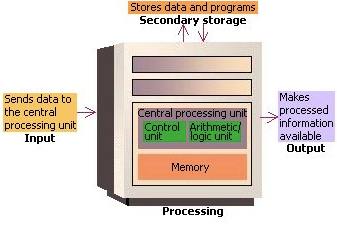

The Central Processing Unit
CPU is short for central processing unit, and is commonly referred to as the “brain” of the computer. The main purpose of the CPU is to constantly convert data input into information output in a format that we mere humans can understand. In other terms, the CPU takes a bunch of 0’s and 1’s then converts them into that picture of your dog drinking beer. CPUs are made up of two units, the Control Unit and the Arithmetic/Logic Unit (ALU) as can be seen in the image below.
The Control Unit doesn’t execute programs, it directs other parts of the system to carry out stored programs instructions. The Control Unit communicates with both the memory and the ALU. The ALU executes Logical and arithmetic operations. Examples of arithmetic operations would be adding, subtracting, multiplying and dividing numbers. Logical operations are mainly comparisons.
The unit will compare numbers with letters or special characters and then take action off of the result. The conditions being tested would typically be: equal to, greater than, less than, greater or equal to, less than or equal to, and not equal.
The CPU also uses registers, this is where information or data is temporarily stored. These registers are not part of memory but additional storage locations, which are extremely fast. Processor registers are also known as the “immediate access store”, basically this is where all the data that is currently being used is stored. These registers are directed by the control unit and are given roles. Some examples would be:
- An Accumulator - collects the results generated by the ALU.
- An Address Register - Tracks where information or data is stored.
- A Storage Register - stores data that is about to be sent from, or recently recieved from memory.
- A General-Purpose Register - Can be used for many functions.
When a CPU executes program instructions, it does so with what we call “The Fetch-Execute Cycle”. As we can see from this image, the Control Unit fetches data from the memory and decodes the instruction. The data is then sent to the ALU, these two steps are known as instruction time (or I-time). The ALU will then execute the arithmetic / logical instruction, then store the result of the operation in either memory or a processor register. The 3rd and 4th steps are known as execution time (E-time). Lastly, the Control Unit directs memory to either release the result to an output device or a secondary storage device.
There are many different CPUs out there, and naturally some are better than others. There are 3 factors that contribute to the speed of a CPU and they are
- Cache Size
- Clock Speed
- Number of Cores

Cache is a very small segment of memory which is built onto the processor, this is where to most frequently accessed instructions / data are stored. The main memory consists of Dynamic RAM (Random Access Memory) whereas the Cache consists of Static RAM. These can be abbreviated as DRAM and SRAM. SRAM is much faster than DRAM as it doesn’t have to be constantly refreshed in order to hold data like DRAM does. A CPU will only hold a few MB of cache, but it puts this small amount of memory to good use. When a CPU accesses data from the main memory, it’s stored in the cache. The CPU then uses complex algorithms to “guess” which instructions or data it might need next, which it fetches from your main memory as well. Unfortunately this process will occasionally fail, we call this “Cache Misses”, and the CPU searches the Cache for data that isn't currently stored in the Cache so the CPU will have to direct access the main memory which can take a lot longer. The chance that your CPU doesn’t produce “Cache Misses” is call the hit rate, and most modern CPU’s have around an 80% hit rate.
Similar to cache, computers also have something called virtual memory which allows a computer to compensate for shortages of physical memory by transferring data from RAM to disk storage. When the computer needs to access the moved data it will transfer it back from the disk storage to the RAM. If the RAM is still full then the computer will move new low priority data from RAM to the disk storage, and the currently required data from the disk storage to back to the RAM. This process is called paging or swapping.The clock speed of a CPU is basically how many times the fetch-execute cycle can complete per second and is measured in hertz.

1 hertz would be one fetch-execute Cycle per second, today most of the top end CPUs have a clock speed between 3 and 4 gigahertz (GHz). In other words, 3-4 billion fetch-execute cycles per second. This is why, even though a CPU can only carry out one instruction at a time, it feels like a computer can do many jobs simultaneously. The other factor that determines CPU speed is the number of cores. Originally a CPU had one core, but now there are CPU’s with 2,4 and 8 cores. A CPU with 2 cores, or dual core processor, can run the fetch-execute cycle twice as fast as a CPU with a single core. Similarly a CPU with 4 cores is called a quad core processor and can carry out the fetch-execute cycle 4 times as quickly as a single core. This image taken from the BBC gives a good visualization of this, with each colour of car representing a different instruction.